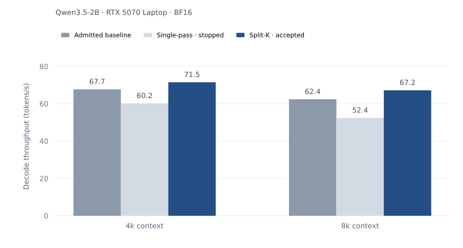

Overview
EngineTailor studies agent-driven optimization of an existing inference repository for a fixed model, device, and workload. It gives agents a complete target execution path, isolates their proposed changes, and keeps correctness checks and acceptance authority outside their control. Accepted implementations and unsuccessful attempts remain as executable experience. When a mechanism moves to a new target, its correctness and performance must be established again.
01Choosing the optimization target
General-purpose inference systems support many models, devices, and serving configurations. That breadth is valuable in production. For an agent optimizing one deployment, it also introduces code and dependencies unrelated to the immediate bottleneck.
Edge devices make the mismatch especially visible. A consumer GPU may encounter a missing fused attention path. An embedded platform may repeatedly launch small operators inside an action-generation loop. A unified-memory laptop may be limited by weight traffic or runtime dispatch. The same model name does not identify the same optimization problem.
EngineTailor starts from a working, versioned engine for that target. "Minimal" limits unrelated functionality. "Complete" preserves the execution path needed to evaluate a change, including model execution, cache behavior, and end-to-end measurement. A standalone kernel benchmark is useful for diagnosis, but it cannot establish an engine-level improvement.
This makes the unit of work concrete. An agent can modify a bounded execution path, such as normalization, attention, weight layout, or graph scheduling, while retaining a runnable baseline and a fixed acceptance protocol.
02Separating implementation from acceptance
The Manager reads the target contract, profiles, prior outcomes, and remaining budget. It packages a bounded task for a fresh Worker, which implements a candidate in an isolated worktree. The Worker can change the proposed implementation, but it cannot redefine its correctness oracle or authorize its own merge.
A protected acceptance process evaluates the candidate against the registered target. Only a passing verdict can advance the engine from its current state to the next one.
- Fix the comparison before the search.Register the workload, baseline, correctness criteria, performance threshold, budget, and stopping rule. Record the base revision for each candidate.
- Establish correctness against a protected reference.Use calibrated, model-specific checks and standing negative controls. A deliberately broken candidate must fail; passing ordinary candidates alone does not establish that the verifier is effective.
- Measure the complete target execution path.A correct candidate must also clear the registered end-to-end performance threshold and independent re-verification. Local kernel speedups guide exploration but do not authorize an engine update.
- Retain the decision and its conditions.Record accepted, rejected, and stopped candidates with measurements and runnable variants. Later tasks can revisit a mechanism without treating a summary as proof.
Why correctness checks need calibration
A small rounding difference can change one generated token and then alter the entire continuation. Comparing two freely generated trajectories can therefore reject an otherwise faithful implementation. EngineTailor uses calibrated teacher-forced checks alongside target-specific probes and negative controls. Continuous-action models instead require action-error, shape, and finiteness checks. Precision-changing paths need a separate quality-evidence board beyond the registered deployment gate.
View the detailed system architecture

03Results on registered deployment targets
The study covers five model–device cells. Qwen3-4B on B200 provides the pre-registered autonomy audit. Llama-3.1-8B on B200 examines model transfer and continuous batching. The edge-oriented cells use an RTX 5070 Laptop GPU, Jetson Orin, and Apple M1 Pro.
The table reports selected comparisons in each target's native metric. These are measurements of the resulting specialist engines, rather than an equal-budget comparison of search policies.
| Target | Workload / metric | Baseline | EngineTailor | Change |
|---|---|---|---|---|
| Qwen3-4BB200 · BF16 | Batch 1 · 4k contextDecode latency ↓ | 3.533 ms/tokenSGLang | 2.669 ms/token | −24.4% |
| Qwen3.5-2BRTX 5070 Laptop · BF16 | 4k contextDecode throughput ↑ | 67.14 tokens/sSGLang median¹ | 71.1 tokens/s | +5.9% |
| π₀.₅Jetson Orin · BF16 | Cold action chunkAction latency ↓ | 333.88 msPhyAI | 313.27 ms | −6.2% |
| Qwen3-0.6BApple M1 Pro · native W8 | Batch 1 · 512 + 128 tokensWall-token latency ↓ | 15.317 ms/tokenOllama Q8_0² | 11.117 ms/token | −27.4% |
Scroll horizontally to view all columns.
¹ SGLang's best RTX run reached 70.89 tokens/s, approximately matching EngineTailor. The 5.9% improvement is relative to its median.
² Native weight-only W8 and GGUF Q8_0 use different quantization formats. This is a deployment comparison, not a same-format kernel comparison.
The Orin board uses three cameras and ten flow steps, with CUDA Event timing, three warmups, and five measured repeats. Results are not aggregated across devices.
A passing candidate can still be the wrong update
A separate RTX admission trace illustrates why correctness and profitability are separate decisions. Single-pass decode and split-K decode both pass 126 of 128 correctness checks. Under the same performance protocol, single-pass decode regresses at both context lengths. Split-K improves both and is admitted.

The same distinction matters on Orin. A faster W8A8 branch misses the frozen action-error threshold, so it does not replace the accepted BF16 implementation. Rejected and stopped branches remain part of the record.
04Reusing mechanisms across targets
EngineTailor preserves chronological evidence, runnable variants, and conditional recipes. A later target can use those records to formulate a candidate. It still needs a new correctness verdict and a new performance comparison under its own contract.
Across models: Llama → Qwen3-4B on B200
A context-bucketed attention mechanism is adapted from a Llama record to Qwen3-4B. Target-side A/B measurements raise concurrency-16 throughput from 2803.6 to 3191.3 tokens/s, a 13.83% gain. The adapted implementation passes 126/128 token decisions and 1920/1920 graph-faithfulness checks, including a context-bucket crossing.
Across devices: B200 → RTX 5070
A prefill transplant combines last-token lm_head slicing, causal SDPA with in-kernel GQA, and RMSNorm. After fresh RTX qualification, prompt throughput improves by 21.8% at 4k and 48.5% at 8k, with 126/128 target steps passing.
Transfer also identifies when a mechanism stops helping
A mechanism that removes host-idle time on Llama does not reproduce the same gain on a Qwen target without that idle interval. Similarly, a correct implementation may cost more than it saves once a target's bottleneck changes. A useful recipe therefore records the conditions behind a result, including the conditions under which it was stopped.
05What the evidence establishes
The central result is a repository process in which agent-authored changes can become independently admitted engine states. The Qwen3-4B/B200 audit records zero human-authored engine-code changes; humans register the target and budget and provide compute. The remaining assisted campaigns establish target-specific specialization and observed retargeting.
The evidence does not isolate a causal search-efficiency benefit from the Manager policy or executable memory. Those claims require dedicated controls and ablations. The deployment results also do not establish a universal engine ranking, and energy and thermal behavior are not normalized across platforms.
An independently admitted repository update provides a concrete unit of progress for agent-driven systems research. Its execution path, comparison protocol, and verdict remain available to the next optimization episode.
Publication and source notes
- EngineTailor: Minimal Complete Inference Engines for Agent-Driven Optimization. Haiyan Qin, Rui Wan, Jinchen Han, Shulin Zeng, Guohao Dai, Yu Wang, and Wang Kang. DAI 2026. The title and authors above follow the official conference listing.
- Experimental values follow the research manuscript's headline results, RTX admission trace, and target-transfer sections. Each comparison retains its own workload and precision conditions. They are not pooled with results from other campaign checkpoints.
- The earlier Chinese-language technical note is retained as a separate record. Its numerical comparisons concern other campaign checkpoints and remain separate from the boards summarized here.